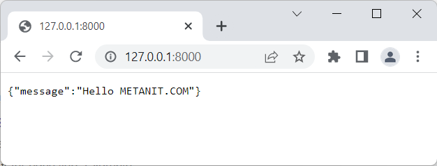
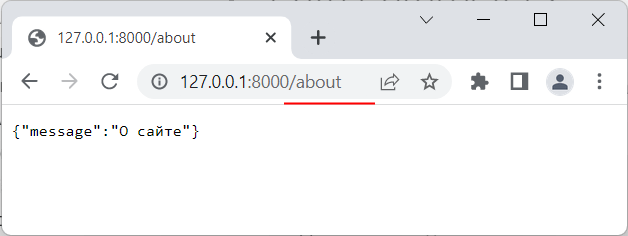

В центре приложения FastAPI находится одноименный класс FastAPI из пакета fastapi. Данный класс фактически и представляет приложение FastAPI. Этот класс наследуется от класса starlette.applications.Starlette
Starlette представляет другой легковесный ASGI-фреймворк для создания асинхронных веб-сервисов на Python. Собственно fastAPI работает
поверх Scarlette, используя и дополняя его функциональность. Это касается не только самого класса FastAPI, но и других классов фреймворка - многие из них используют функционал Scarlette.
Конструктор класса FastAPI имеет около трех десятков различных параметров, которые позволяют настроить работу приложения. Но в общем случае для создания функционирующего объекта класса можно не передавать в конструктор никаких аргументов, тогда параметры получают значения по умолчанию:
from fastapi import FastAPI app = FastAPI()
Одним из преимуществ FastAPI является то, что фреймворк позволяет быстро и легко построить веб-сервис в стиле REST. Архитектура REST предполагает применение следующих методов или типов запросов HTTP для взаимодействия с сервером, где каждый тип запроса отвечает за определенное действие:
GET (получение данных)
POST (добавление данных)
PUT (изменение данных)
DELETE (удаление данных)
Кроме этих типов запросов HTTP поддерживает еще ряд, в частности:
OPTIONS
HEAD
PATCH
TRACE
В классе FastAPI для каждого из этих типов запросов определены одноименные методы:
get()
post()
put()
delete()
options()
head()
patch()
trace()
Например, если нам надо обработать HTTP-запрос типа GET, то применяется метод get().
Все эти методы имеют множество параметров, но все они в качестве обязательного параметра принимают путь, запрос по которому должен обрабатываться.
Причем эти методы сам запрос не обрабатывают - они применяются в качестве декоратора к функциям, которые непосредственно обрабатывают запрос. Например:
from fastapi import FastAPI
app = FastAPI()
@app.get("/")
def root():
return {"message": "Hello METANIT.COM"}
В данном случае метод app.get() применяется в качестве декоратора к функции root() (символ @ указывает на определение декоратора).
Этот декоратор определяет путь, запросы по которому будет обрабатывать функция root(). В данном случае путь представляет строку "/", то есть функция будет обрабатывать запросы к корню
веб-приложения (например, по адресу http://127.0.0.:8000/).
Функция возвращает некоторые результат. Обычно это словарь (объект dict). Здесь словарь содержит один элемент "message". При отправке эти данные автоматически сериализуются в формат JSON -
популярный формат для взаимодействия между клиентом и сервером. А у ответа для заголовка content-type устанавливается значение application/json.
Вообще функция может возвращать различные данные - словари (dict), списки (list), одиночные значения типа строк, чисел и т.д., которые затем сериализуются в json.
Соответственно, если мы запустим приложение и обратимся по адресу http://127.0.0.:8000/, например, в браузере, то мы получим ответ сервера в формате json:

Подобным образом можно определять и другие функции, которые будут обрабатывать запросы по другим путям. Например:
from fastapi import FastAPI
app = FastAPI()
@app.get("/")
def root():
return {"message": "Hello METANIT.COM"}
@app.get("/about")
def about():
return {"message": "О сайте"}
Здесь добавлена функция about(), которая обрабатывает запросы по пути "/about":
